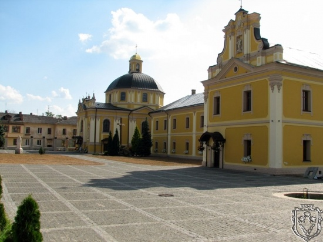
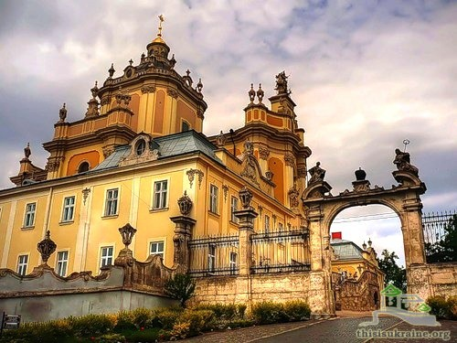
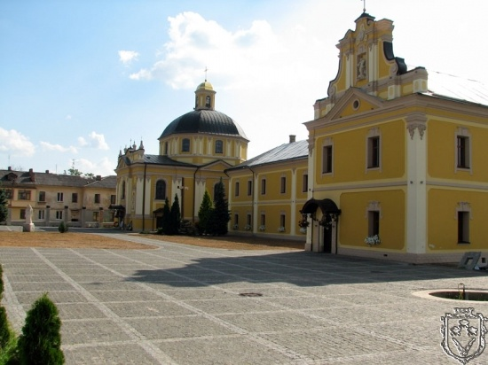
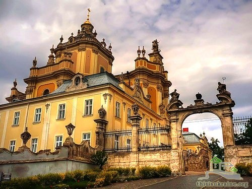

Пам'ятки України
Козацька доба
17 - 18 століттяМонастир святого Юра
1763 р.
Засновник:
белзьким воєводою Францішеком Салезієм Потоцьким
Місце розташування:
Червоноград
Вірування:
православ'я
 


Цікаві факти:
Велика церква у псевдокласичному стилі славилася чудотворною іконою Богоматері; цінна бібліотека зберігала до кінця XIX ст. старовинні пергаменові церковні книги з сусіднього ще княжого монастирка у Городищі Василіянському над Бугом (Городиський Апостол 12 ст., званий також Кристинопільським; Городиське, або Бучацьке, Євангеліє 12 — 13 ст.; Городиський пом'яник 1484 тощо).
У 1762 р. Франциск Салезій Потоцький, тодішній власник Кристинополя, задумав заснувати у місті дім для місіонерів Чину св. Василія Великого. Тоді ж він звернувся до єпископа Белзького та Холмського Максиміліяна Рилла, щоб він віддав управу парохією у Кристинополі оо. Василіянам.
Невеличка українська громада мала для своєї духовної обслуги малу дерев’яну церкву. На її місці Потоцький постановив збудувати василіянський монастир і монастирську церкву.